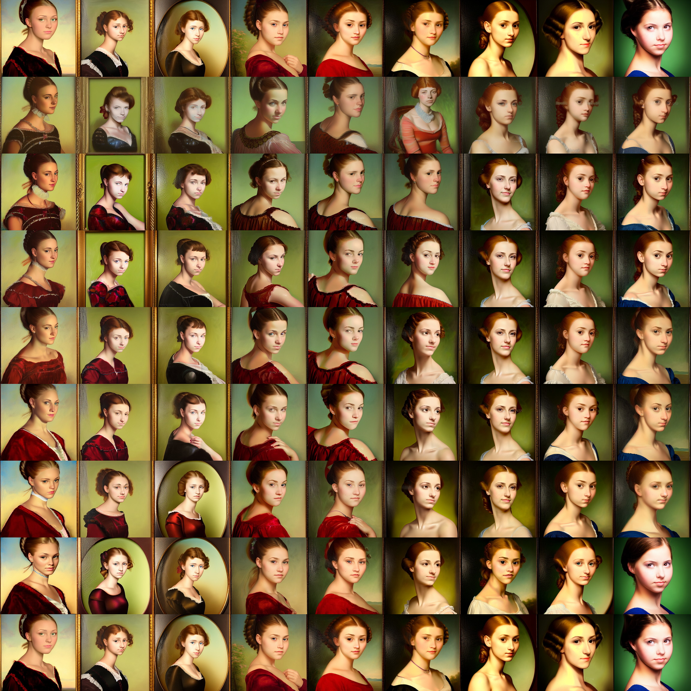

Others#
Google Colab#

Open and follow instructions to use an isolated environment running Dream.
Output Example:

Seamless Tiling#
The seamless tiling mode causes generated images to seamlessly tile with itself. To use it, add the
--seamless option when starting the script which will result in all generated images to tile, or
for each invoke> prompt as shown here:
By default this will tile on both the X and Y axes. However, you can also specify specific axes to tile on with --seamless_axes.
Possible values are x, y, and x,y:
Shortcuts: Reusing Seeds#
Since it is so common to reuse seeds while refining a prompt, there is now a shortcut as of version
1.11. Provide a -S (or --seed) switch of -1 to use the seed of the most recent image
generated. If you produced multiple images with the -n switch, then you can go back further
using -2, -3, etc. up to the first image generated by the previous command. Sorry, but you can't go
back further than one command.
Here's an example of using this to do a quick refinement. It also illustrates using the new -G
switch to turn on upscaling and face enhancement (see previous section):
invoke> a cute child playing hopscotch -G0.5
[...]
outputs/img-samples/000039.3498014304.png: "a cute child playing hopscotch" -s50 -W512 -H512 -C7.5 -mk_lms -S3498014304
# I wonder what it will look like if I bump up the steps and set facial enhancement to full strength?
invoke> a cute child playing hopscotch -G1.0 -s100 -S -1
reusing previous seed 3498014304
[...]
outputs/img-samples/000040.3498014304.png: "a cute child playing hopscotch" -G1.0 -s100 -W512 -H512 -C7.5 -mk_lms -S3498014304
Weighted Prompts#
You may weight different sections of the prompt to tell the sampler to attach different levels of
priority to them, by adding :<percent> to the end of the section you wish to up- or downweight. For
example consider this prompt:
This will tell the sampler to invest 25% of its effort on the tabby cat aspect of the image and 75% on the white duck aspect (surprisingly, this example actually works). The prompt weights can use any combination of integers and floating point numbers, and they do not need to add up to 1.
Filename Format#
The argument --fnformat allows to specify the filename of the
image. Supported wildcards are all arguments what can be set such as
perlin, seed, threshold, height, width, gfpgan_strength,
sampler_name, steps, model, upscale, prompt, cfg_scale,
prefix.
The following prompt
dream> a red car --steps 25 -C 9.8 --perlin 0.1 --fnformat {prompt}_steps.{steps}_cfg.{cfg_scale}_perlin.{perlin}.png
generates a file with the name: outputs/img-samples/a red car_steps.25_cfg.9.8_perlin.0.1.png
Thresholding and Perlin Noise Initialization Options#
Two new options are the thresholding (--threshold) and the perlin noise initialization (--perlin) options. Thresholding limits the range of the latent values during optimization, which helps combat oversaturation with higher CFG scale values. Perlin noise initialization starts with a percentage (a value ranging from 0 to 1) of perlin noise mixed into the initial noise. Both features allow for more variations and options in the course of generating images.
For better intuition into what these options do in practice:

In generating this graphic, perlin noise at initialization was programmatically varied going across on the diagram by values 0.0, 0.1, 0.2, 0.4, 0.5, 0.6, 0.8, 0.9, 1.0; and the threshold was varied going down from 0, 1, 2, 3, 4, 5, 10, 20, 100. The other options are fixed, so the initial prompt is as follows (no thresholding or perlin noise):
invoke> "a portrait of a beautiful young lady" -S 1950357039 -s 100 -C 20 -A k_euler_a --threshold 0 --perlin 0
Here's an example of another prompt used when setting the threshold to 5 and perlin noise to 0.2:
invoke> "a portrait of a beautiful young lady" -S 1950357039 -s 100 -C 20 -A k_euler_a --threshold 5 --perlin 0.2
Note
currently the thresholding feature is only implemented for the k-diffusion style samplers, and empirically appears to work best with k_euler_a and k_dpm_2_a. Using 0 disables thresholding. Using 0 for perlin noise disables using perlin noise for initialization. Finally, using 1 for perlin noise uses only perlin noise for initialization.
Simplified API#
For programmers who wish to incorporate stable-diffusion into other products, this repository includes a simplified API for text to image generation, which lets you create images from a prompt in just three lines of code:
Outputs is a list of lists in the format [filename1,seed1],[filename2,seed2]...].
Please see the documentation in ldm/generate.py for more information.
Created: September 11, 2022